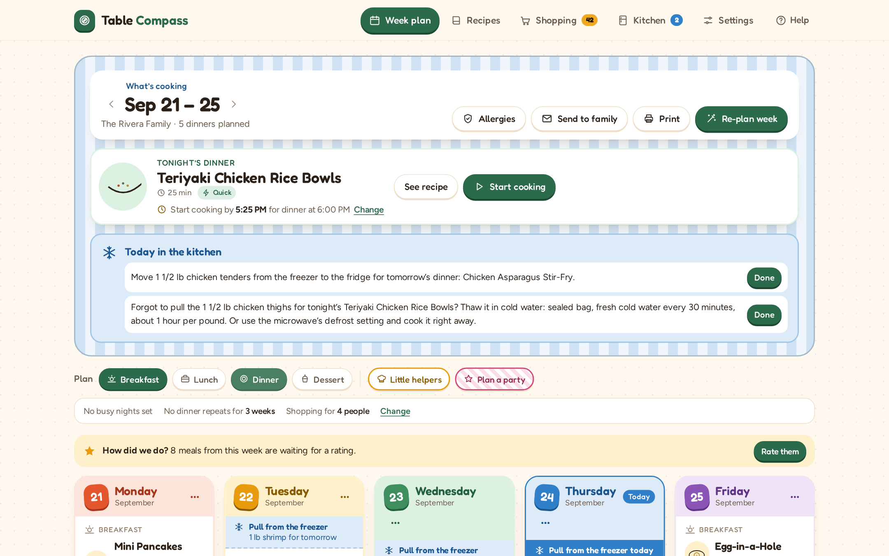
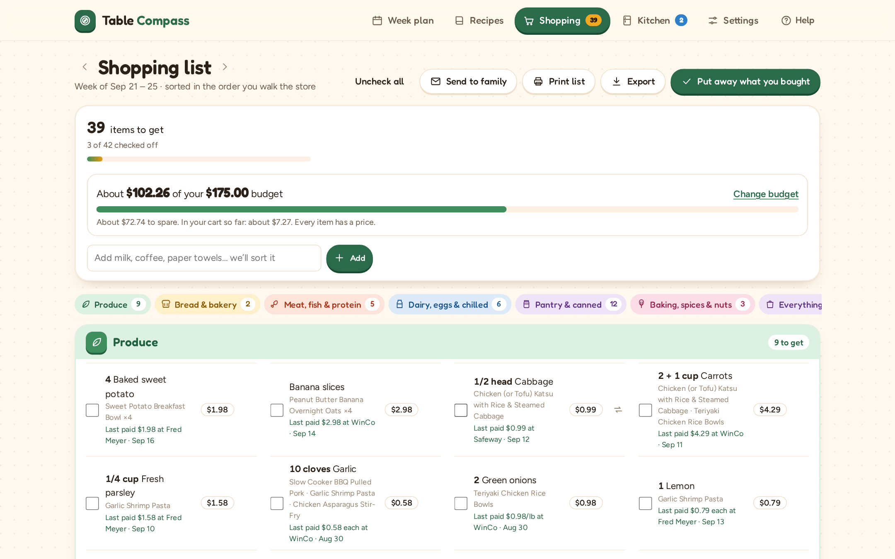
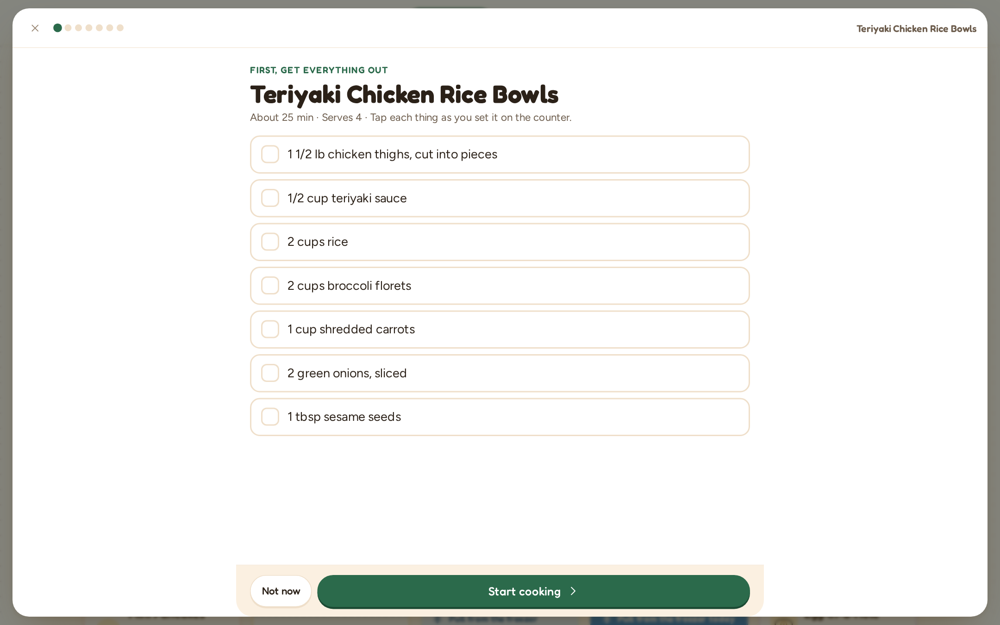

I built three apps with AI so I could spend more time writing
I work full time, teach, and parent. The only way to find more hours for stories was to stop losing them to everything else.
The story so far · Part 5 of 5
Between my job, teaching and family, my writing time kept getting squeezed out by the little things: deciding what’s for dinner, keeping track of everyone’s schedules, and winding down enough to sleep. So I built tools to handle those for me. With a lot of help from AI, those tools became three real apps.



The three apps
- Table Compass started as a meal-planning tool for my own family. It plans the week, writes the shopping list, prints menus, and has my favorite feature: it reminds you when to put food in the freezer and when to take it out.
- Schedule Compass started as a weekly planner for a family member heading off to college. It turned into a planner for anyone juggling school and work.
- Dream Compass plays tones, sleep beats and nature sounds all night. I use it myself to focus while I write and to fall asleep.
The rules I gave myself
I really don’t like subscriptions. So every app is one price, once. No ads, no accounts and no tracking. Your information stays on your phone.
What was hard
- Names. My meal planner had a different name until I found too many similar apps. Table Compass, Schedule Compass and Dream Compass now belong together, like waypoints.
- App store reviews. Windows came first, in October. Apple took longer: test builds, beta testers, review and resubmission. All three are on the App Store now.
- Learning a new world. Developer accounts, privacy labels, screenshots, store listings. None of it was in my wheelhouse a few months ago.
Where AI fits, and where it doesn’t
AI helped me build software I couldn’t have built alone, and that gave me back hours every week. It doesn’t write my books. My stories are mine, the art in every book I sell is made by real artists, and real readers see my books before you do.
That was the whole point: let the tools carry the busywork, so I can spend more time doing what I love. See all three on the Apps page.